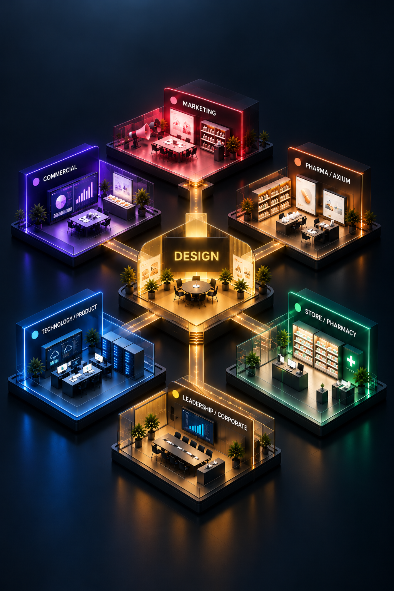
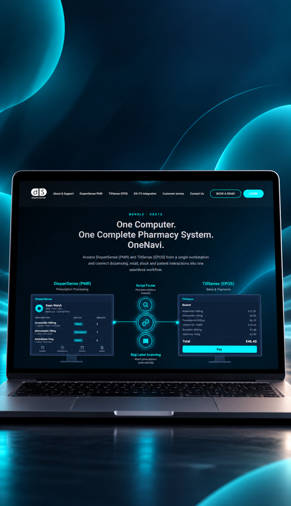
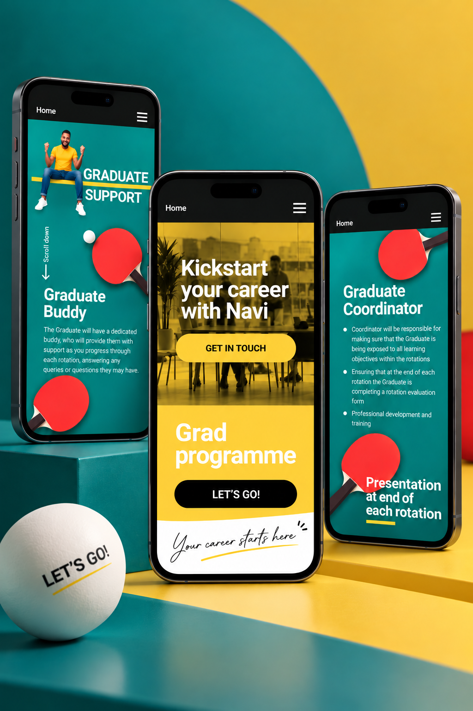
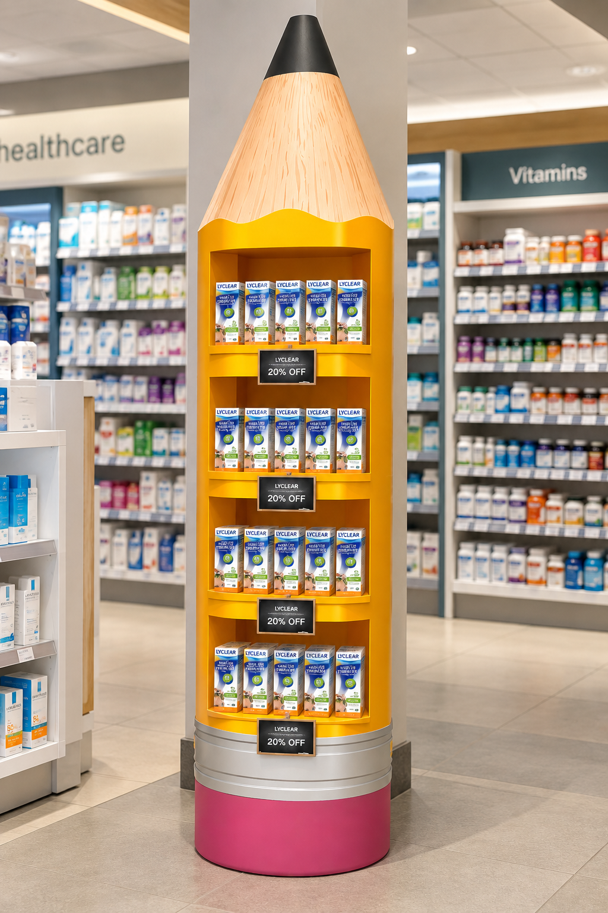
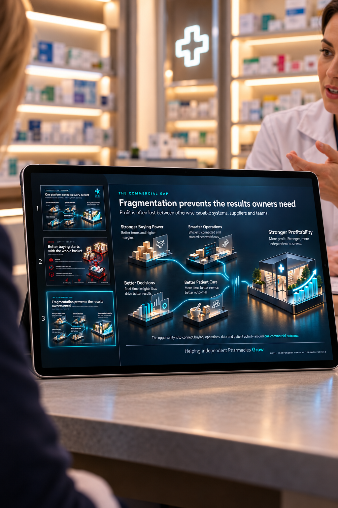

Navi — Design Across an Ecosystem
Designing across a business,
not just a brand.
Navi brings together pharmacy services, technology, retail, commercial teams and individual product brands. My role sits across that ecosystem — creating work for very different audiences while keeping it connected.

01 — The Challenge
One design function.
Many different needs.
The work can move from a product launch to a sales presentation, a pharmacy display, a digital experience or an internal campaign — often for completely different audiences.
The challenge isn’t making everything look the same. It’s creating enough consistency that it still feels part of the same organisation.
02 — Connecting the Experience
Different products.
One pharmacy journey.
DispenSense and TillSense are separate products, but for the pharmacist they can operate as one connected system. The design needed to make that relationship immediately understandable.

Turning a technical integration into a simple visual story.
03 — Different Audience, Different Language
The system has to flex.
Not everything should look corporate. Graduate recruitment needed energy, personality and a completely different visual language — without feeling disconnected from Navi.

04 — From Screen to Store
Design doesn’t stop
at digital.
The work also has to function in the physical pharmacy — where visibility, space, product hierarchy and customer behaviour matter as much as the visual idea.

05 — Building Tools for Other Teams
Good design has to work
when I’m not in the room.
Sales teams need to communicate complex products and commercial ideas without rebuilding the story every time. I began developing a more repeatable presentation system — using AI-assisted workflows to explore, structure and produce consistent visual narratives more efficiently.

The goal wasn’t to
automate design.
It was to define the rules well enough that the process could become faster without losing judgement, hierarchy or consistency.
06 — The Day-to-Day
The work behind
the work.
Alongside larger projects, I support the ongoing creative needs of Navi and its pharmacy brands across campaigns, retail, print and day-to-day communications.
- CarePlus / StayWell / Silent Symbol
- Seasonal campaigns
- Window vinyls & pharmacy POS
- Catalogues & brochures
- Digital & social assets
- Retail communications
- Brand collateral
- Day-to-day creative briefs
07 — My Role
Designing the work —
and increasingly, the
system behind it.
Working across Navi has gradually shifted my role beyond producing individual pieces. More of the work is about connecting ideas, establishing visual direction and creating systems that other people can use.